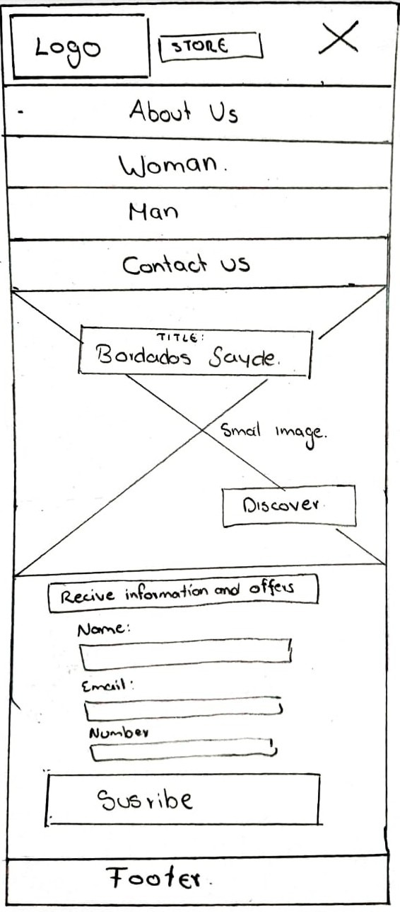
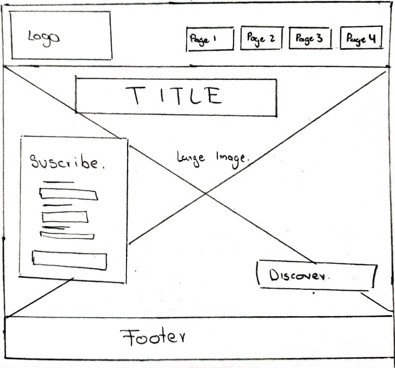

Name: Bordados Sayde
The name reflects identity, tradition, and the art of embroidery that characterizes the culture; moreover, Sayde is one of the most special people we have in the family.
Purpose:
The purpose of this website is to promote and sell the embroidered products of Bordados Sayde, a family business specializing in creating unique, high-quality traditional clothing. The website will function as an online store where customers can browse and purchase products from the comfort of their homes.
Scenarios:
- What types of traditional Otavalo clothing are available in the store?
- What is the process for purchasing products and how long does shipping take?
- What cultural significance do the embroideries on each garment have?
Color Scheme:
- Headings and footer: #fe8181
- Background: #fdf9f9
- Text: black
- Buttons: #fa3434
Typography:
- Headings: Amarante, serif
- Body: Montserrat, sans-serif
Wireframe:

